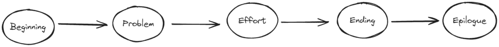
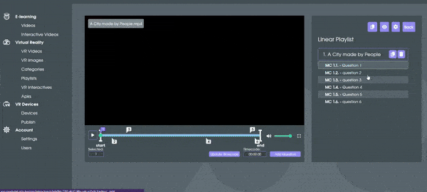
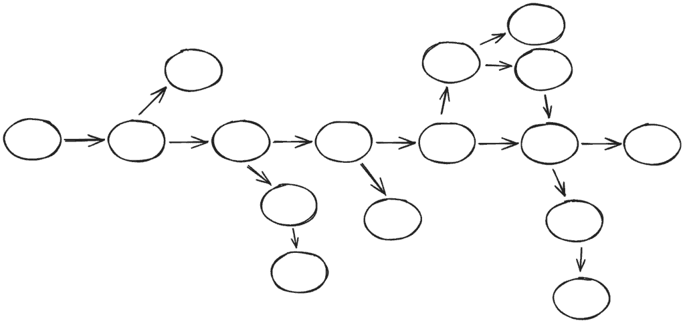
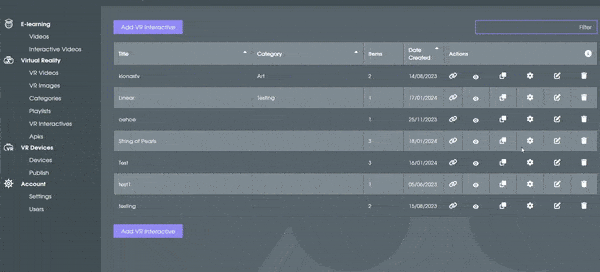
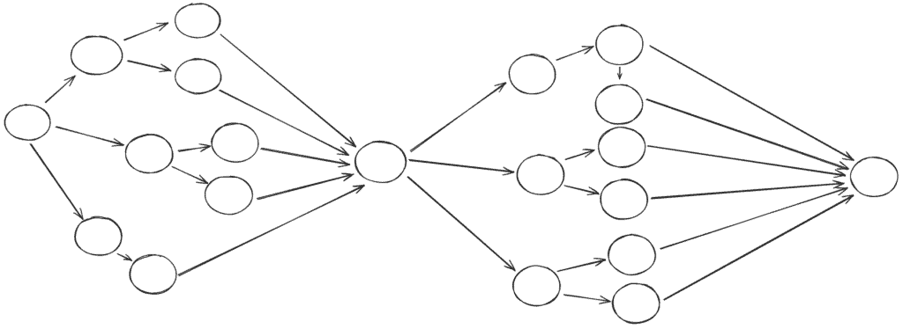
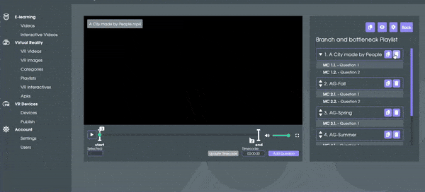
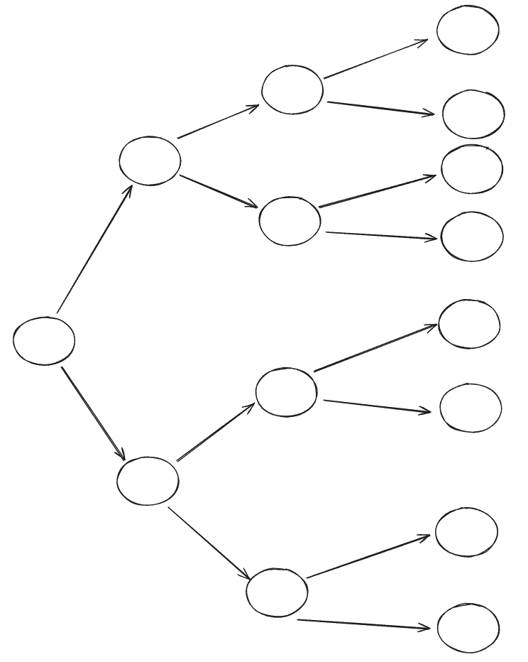

There are many different sorts of Branched Narratives (branched videos). Finding the one that fits the experience you want to create is important. Below are the most popular story narratives.
Linear Storyline
A linear story, even for Virtual Reality, follows the same path as a normal linear story. There is never an option of answering an alternative answer and getting another ending. The user follows a predetermined path toward the ending without their input affecting the ending of the story.

As you can see in this Interactive, you progress through the video with some questions here and there, which all only have one answer. This is an example of how you can make a multiple choice linear storyline (with only one answer). Linear storytelling also works great with the checkbox structure.
String of Pearls
The string of pearls, also known as the wide linear structure, is basically a main storyline which branches off slightly. It allows for a less linear experience while going through the plotline. You can, for example, choose an answer and get a slightly different situation than the other choices while eventually being led back towards the main storyline. Or you answer the question incorrectly and get a premature ending. This is a structure that's used most commonly.


The string of pearls has to be used in a branched narrative Interactive video.
The Branch-and-Bottleneck Map
A branch-and-bottleneck structure allows the users to explore different paths in the story that eventually rejoin the larger narrative. So you could have multiple answers in a video that have their own side stories but in the end still join the plotline. You could do this if there isn't necessarily one correct answer to the questions.


Be careful to use this method sparingly or the user could get the feeling that the choices they make have no effect on the story of your interactive video and it'll make the experience less interesting.
The Many Endings Structure
The many endings structure allows your user to really have a big impact on the storyline. Every time a question is answered they get thrown to another path. This way the user can experience the different outcomes of the story and see which consequences are attached to the choices you make throughout the video. This is also the method we see most used in our training videos. However, be aware that too much choice can give the user a feeling of confusion or aimlessness. Finding the balance to it all is ultimately the key to having a good Branched Video.

In the video above you can see that on the first question you're immediately presented with a choice. It splits into different videos and continues splitting until the ending. With this type of storytelling you can really show the effects your choices have on the outcome of the (VR) Interactive.
Did you know?
You can combine these Branched Narratives to create an even more immersive (VR) Interactive.